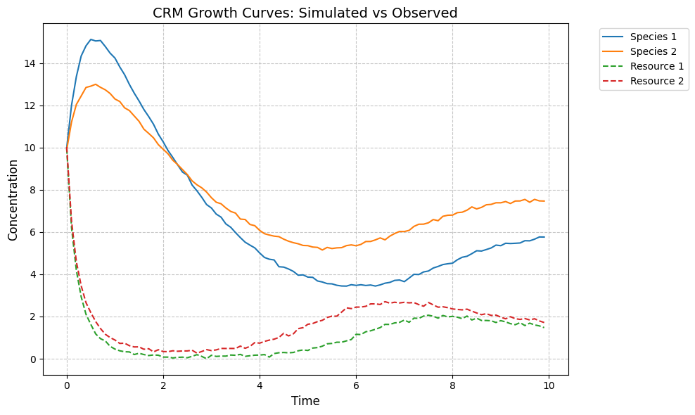

[8]:
from mimic.utilities.utilities import set_all_seeds
from mimic.utilities.utilities import plot_CRM
from mimic.model_infer import *
from mimic.model_simulate import *
import pandas as pd
import numpy as np
import matplotlib.pyplot as plt
from scipy.integrate import odeint
import pymc as pm
import arviz as az
from pymc.ode import DifferentialEquation
from mimic.model_simulate.sim_CRM import sim_CRM
import pytensor.tensor as at
Simulate some time course data from the CRM¶
The McArthur Consumer Resource Model takes the form
\[dN_i/dt = 1/\tau_i N_i (\sum_a(c_{ia} w_a R_a - m_i))\]
\[dR_a/dt = 1/(r_a K_a) (K_a - R_a) R_a - \sum_i(N_i c_{ia} R_a)\]
where:
\(N_i\) is the concentration of a species
\(R_a\) is the concentration of a resource
\(c_{ia}\) is the preference of species \(i\) for resource \(a\)
\(w_a\) is the quality of resource \(a\)
\(m_i\) is the mortality rate of species \(i\)
\(K_a\) is the carrying capacity of resource \(a\)
\(\tau_i\) is the timescale of species \(i\)
\(r_a\) is the timescale of resource \(a\)
Generate parameters for model with two species¶
[12]:
set_all_seeds(123)
num_species = 2
num_resources = 2
times = np.arange(0, 10, 0.1)
tau = np.array([0.6, 0.9]) # species timescales
w = np.array([0.5, 0.6]) # resource quality
c = np.array([[0.25, 0.08], [0.06, 0.22]]) # relative resource preferences
m = np.array([0.25, 0.28]) # mortality rates
r = np.array([0.4, 0.35]) # resource timescales
K = np.array([5.0, 6.0]) # resource carrying capacities
# tau = np.random.uniform(0.1, 0.9, num_species) # species timescales
# w = np.random.uniform(0.1, 0.9, num_resources) # resource quality
# c = np.random.uniform(0.1, 0.9, (num_species, num_resources)) # relative resource preferences
# m = np.random.uniform(0.3, 0.7, num_species) # mortality rates
# r = np.random.uniform(0.1, 0.9, num_resources) # resource timescales
# K = np.random.uniform(1.0, 10.0, num_resources) # resource carrying capacities
# write the parameters to a dictionary and pickle
params = {'num_species': num_species, 'num_resources': num_resources, 'tau': tau, 'w': w, 'c': c, 'm': m, 'r': r, 'K': K}
pd.to_pickle(params, 'params-s2-r2.pkl')
[13]:
print(params)
{'num_species': 2, 'num_resources': 2, 'tau': array([0.6, 0.9]), 'w': array([0.5, 0.6]), 'c': array([[0.25, 0.08],
[0.06, 0.22]]), 'm': array([0.25, 0.28]), 'r': array([0.4 , 0.35]), 'K': array([5., 6.])}
Simulate single time course¶
[16]:
# initial conditions
init_species = 10 * np.ones(num_species+num_resources)
# instantiate simulator
simulator = sim_CRM()
simulator.set_parameters(num_species = params['num_species'],
num_resources = params['num_resources'],
tau = params['tau'],
w = params['w'],
c = params['c'],
m = params['m'],
r = params['r'],
K = params['K'])
simulator.print_parameters()
observed_species, observed_resources = simulator.simulate(times, init_species)
observed_data = np.hstack((observed_species, observed_resources))
# add Guassian noise to the data
observed_species = observed_species + np.random.normal(loc=0, scale=0.05, size=observed_species.shape)
observed_resources = observed_resources + np.random.normal(loc=0, scale=0.05, size=observed_resources.shape)
# Replace negative values with 0
observed_species = np.maximum(observed_species, 0.0001)
observed_resources = np.maximum(observed_resources, 0.0001)
# plot simulated species and resouce dynamics
plot_CRM(observed_species, observed_resources, times)
# Write the data to a csv file
df_species = pd.DataFrame(observed_species, columns=[f'species_{i + 1}' for i in range(observed_species.shape[1])])
df_resources = pd.DataFrame(observed_resources, columns=[f'resource_{i + 1}' for i in range(observed_resources.shape[1])])
# Add the time column to ensure combination matches up
df_species['time'] = times
df_resources['time'] = times
# create df with just species data to test resource inference
cols = ['time'] + [col for col in df_species.columns if col != 'time']
df_species = df_species[cols]
# Save species-only data
df_species.to_csv('data-s2-infer-r2.csv', index=False)
# Combine the species and resources into one DataFrame
df_combined = pd.concat([df_species.drop(columns=['time']), df_resources], axis=1)
# Ensure time is the first column
cols = df_combined.columns.tolist()
cols = cols[-1:] + cols[:-1]
df_combined = df_combined[cols]
# Write the combined data to a CSV file
df_combined.to_csv('data-s2-r2.csv', index=False)

[ ]: